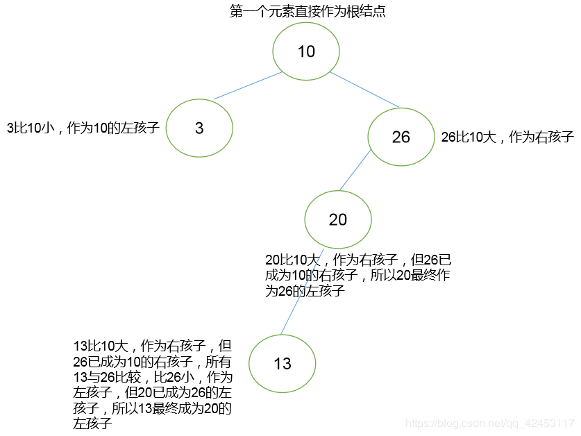

Java的集合类由Collection接口和Map接口派生，其中：
那么本篇文章将从源码角度讨论一下无序集合Set。
HashSet实现 Set 接口，由哈希表（实际上是一个 HashMap 实例）支持。它不保证 set 的迭代顺序；特别是它不保证该顺序恒久不变。此类允许使用 null 元素。看下面的一个例子：
HashSet<String> hs = new HashSet<String>();
// 添加元素
hs.add("hello");
hs.add("world");
hs.add("java");
hs.add("world");
hs.add(null);
//遍历
for (String str : hs) {
System.out.println(str);
}执行结果：
null
world
java
hello由执行结果可知，它允许加入null，元素不可重复，且元素无序。
那我们想，它是如何保证元素不重复的呢？这就要来分析一下它的源码。
首先是HashSet集合的add()方法：
public boolean add(E e) {
return map.put(e, PRESENT)==null;
}该方法中调用了map对象的put()方法，那么map对象是什么呢？
private transient HashMap<E,Object> map;可以看到，这个map对象就是HashMap，我们继续查看HashSet的构造方法：
public HashSet() {
map = new HashMap<>();
}到这里，应该就能明白，HashSet的底层实现就是HashMap，所以调用的put()方法就是HashMap的put()方法，那我们继续查看put()方法：
public V put(K key, V value) {
return putVal(hash(key), key, value, false, true);
}put()方法调用了putVal()方法，那么重点就是这个putVal()方法了：
final V putVal(int hash, K key, V value, boolean onlyIfAbsent,
boolean evict) {
Node<K,V>[] tab; Node<K,V> p; int n, i;
//判断hashmap对象中 tabel属性是否为空--->为空---->resize()
if ((tab = table) == null || (n = tab.length) == 0)
n = (tab = resize()).length;
//发现tab[i] 没有值，直接存入即可
if ((p = tab[i = (n - 1) & hash]) == null)
tab[i] = newNode(hash, key, value, null);
else {
//tab[i]有值，分情况讨论
Node<K,V> e; K k;
// 如果新插入的元素和table中p元素的hash值，key值相同的话
if (p.hash == hash &&
((k = p.key) == key || (key != null && key.equals(k))))
e = p;
// 如果是红黑树结点的话，进行红黑树插入
else if (p instanceof TreeNode)
e = ((TreeNode<K,V>)p).putTreeVal(this, tab, hash, key, value);
else {
for (int binCount = 0; ; ++binCount) {
// 代表这个单链表只有一个头部结点，则直接新建一个结点即可
if ((e = p.next) == null) {
p.next = newNode(hash, key, value, null);
// 链表长度大于8时，将链表转红黑树
if (binCount >= TREEIFY_THRESHOLD - 1) // -1 for 1st
treeifyBin(tab, hash);
break;
}
// 如果与单向链表上的某个结点key值相同，则跳出循环，此时e是需要修改的结点，p是e的前驱结点
if (e.hash == hash &&
((k = e.key) == key || (key != null && key.equals(k))))
break;
//更新变量p
p = e;
}
}
//处理完毕，添加元素
if (e != null) { // existing mapping for key
V oldValue = e.value;
//判断是否允许覆盖，并且value是否为空
if (!onlyIfAbsent || oldValue == null)
e.value = value;
afterNodeAccess(e);
return oldValue;
}
}
++modCount;// 更改操作次数
//如果大于临界值
if (++size > threshold)
//将数组大小设置为原来的2倍，并将原先的数组中的元素放到新数组中
resize();
afterNodeInsertion(evict);
return null;
}我们一起分析一下这段源码，首先它将table对象赋值给tab，并判断tab是否为空，这里的table就是哈希表，因为HashMap是基于哈希表的Map接口的实现，如果哈希表为空则调用resize()方法开辟存储空间并赋值给tab，然后将tab的长度赋值给n。接着根据 (n - 1) & hash 算法计算出i并获取tab的第i个元素，如果没有值，那么可以直接存入，如果有值，那么就存在两种情况：
也就是说，如果在添加过程中发现key值重复，那么就把p复制给e，p为当前位置上的元素，e为需要被修改的元素。而位置冲突又分为几种情况：
那么根据这三种情况，需要分别作出判断：如果p是TreeNode的实例(p instanceof TreeNode)，说明p下面挂着红黑树，需要在树中找到一个合适的位置e插入。如果p下面的结果数没有超过8，则p就是以单向链表的形式存在，然后在链表中逐个往下找到空位置；如果超过了8，就要将p转换为红黑树；如果与单向链表上的某个结点key值相同，则跳出循环，此时e是需要修改的结点，p是e的前驱结点。最后就是判断插入后的大小，如果大于threshold，则继续申请空间。
那么这是jdk1.8之后的关于HashMap的存储方式，也就是数组 + 链表 + 红黑树的结构，而在1.8之前，HashMap是由数组 + 链表的结构作为存储方式的。
所以HashSet如何保证元素是唯一的呢？关键就在于这一句判断：
if (e.hash == hash && ((k = e.key) == key || key.equals(k)))它先看hashCode()值是否相同，如果相同，则继续看equals()方法，如果也相同，则证明元素重复，break跳出循环，元素不添加，如果不相同则进行添加。所以当一个自定义的类想要正确存入HashSet集合，就应该去重写equals()方法和hashCode()方法，而String类已经重写了这两个方法，所以它就可以把相同的字符串去掉，只保留其中一个。
那我们继续看下面的一个例子：
自定义学生类
public class Student {
private String name;
private int age;
public Student(String name, int age) {
this.name = name;
this.age = age;
}
public String getName() {
return name;
}
public void setName(String name) {
this.name = name;
}
public int getAge() {
return age;
}
public void setAge(int age) {
this.age = age;
}
@Override
public String toString() {
return "Student [name=" + name + ", age=" + age + "]";
}
}然后编写测试代码：
HashSet<Student> hs = new HashSet<Student>();
//添加元素
Student s = new Student("刘德华",30);
Student s2 = new Student("陈奕迅",31);
Student s3 = new Student("周星驰",32);
Student s4 = new Student("刘德华",30);
hs.add(s);
hs.add(s2);
hs.add(s3);
hs.add(s4);
//遍历
for (Student student : hs) {
System.out.println(student);
}在上述代码中，s4和s对象的姓名和年龄都相同，按理说这是两个相同的对象，是不能同时在HashSet集合中存在的，然而我们看运行结果：
Student [name=周星驰, age=32]
Student [name=刘德华, age=30]
Student [name=陈奕迅, age=31]
Student [name=刘德华, age=30]如果前面的源码分析大家都理解了的话，这个相信大家就能明白，这是因为我们没有去重写hashCode()方法和equals()方法，而它默认就会去调用Object的方法，所以它会认为每个学生对象都是不相同的。那我们现在来重写一下这两个方法：
@Override
public int hashCode() {
return 0;
}
@Override
public boolean equals(Object obj) {
//添加了一条输出语句，用于显示比较次数
System.out.println(this + "---" + obj);
if (this == obj) {
return true;
}
if (!(obj instanceof Student)) {
return false;
}
Student s = (Student) obj;
return this.name.equals(s.name) && this.age == s.age;
}然后我们运行程序：
Student [name=陈奕迅, age=31]---Student [name=刘德华, age=30]
Student [name=周星驰, age=32]---Student [name=刘德华, age=30]
Student [name=周星驰, age=32]---Student [name=陈奕迅, age=31]
Student [name=刘德华, age=30]---Student [name=刘德华, age=30]
Student [name=刘德华, age=30]
Student [name=陈奕迅, age=31]
Student [name=周星驰, age=32]可以看到，虽然去除了重复元素，但是比较的次数未免过多，因为hashCode()方法返回的是一个固定值0，所以在进行判断的时候hashCode值永远相同从而多次调用equals()进行判断，那么我们就可以尽可能地使hashCode值不相同，那么哈希值和哪些内容相关呢？
因为它和对象的成员变量值相关，所以我们可以进行如下措施：
如果是基本类型变量，直接加值；
如果是引用类型变量，加哈希值。
所以对hashCode()作如下修改：
@Override
public int hashCode() {
//为了避免某种巧合导致两个不相同的对象其计算后返回的hashCode值相同，这里对基本类型age进行一个乘积的运算
return this.name.hashCode() + this.age * 15;
}现在运行看效果：
Student [name=刘德华, age=30]---Student [name=刘德华, age=30]
Student [name=周星驰, age=32]
Student [name=刘德华, age=30]
Student [name=陈奕迅, age=31]重复元素成功被去除，而比较次数缩减为了一次，大大提升了程序运行效率。
它是具有可预知迭代顺序的 Set 接口的哈希表和链接列表实现，该集合方法全部继承自父类HashSet，但它与HashSet的唯一区别就是它具有可预知迭代顺序，它遵从存储和取出顺序是一致的。直接举例说明：
LinkedHashSet<String> linkedHashSet = new LinkedHashSet<String>();
//添加元素
linkedHashSet.add("hello");
linkedHashSet.add("world");
linkedHashSet.add("java");
//遍历
for (String str : linkedHashSet) {
System.out.println(str);
}运行结果：
hello
world
java它是基于 TreeMap 的 NavigableSet 实现。使用元素的自然顺序对元素进行排序，或者根据创建 set 时提供的 Comparator 进行排序，具体取决于使用的构造方法。
举例说明：
TreeSet<Integer> treeSet = new TreeSet<Integer>();
//添加元素
treeSet.add(10);
treeSet.add(26);
treeSet.add(20);
treeSet.add(13);
treeSet.add(3);
//遍历
for(Integer i : treeSet) {
System.out.println(i);
}运行结果：
3
10
13
20
26由此可见，TreeSet是具有排序功能的。但请注意，如果使用无参构造创建TreeSet集合，它将默认使用元素的自然排序；当然你也可以传入比较器来构造出TreeSet。
那么它是如何实现元素的自然排序的呢？我们通过源码来分析一下：
首先看它的add()方法
public boolean add(E e) {
return m.put(e, PRESENT)==null;
}方法内部调用了m对象的put()方法，而这个m是一个NavigableMap对象：
private transient NavigableMap<E,Object> m;当我们继续跟进put()方法的时候，发现它是一个抽象方法：
V put(K key, V value);该方法处于Map接口中，那么我们就要去找Map接口的实现类，我们知道，TreeSet是基于TreeMap实现的，所以我们认为它调用的其实是TreeMap的put()方法，查阅TreeMap的继承结构也可以证实这一点：
java.util
类 TreeMap<K,V>
java.lang.Object
继承者 java.util.AbstractMap<K,V>
继承者 java.util.TreeMap<K,V>
类型参数：
K - 此映射维护的键的类型
V - 映射值的类型
所有已实现的接口：
Serializable, Cloneable, Map<K,V>, NavigableMap<K,V>, SortedMap<K,V> TreeMap确实也实现了NavigableMap接口，那我们就来看一看TreeMap的put()方法：
public V put(K key, V value) {
Entry<K,V> t = root;
//创建树的根结点
if (t == null) {
compare(key, key); // type (and possibly null) check
root = new Entry<>(key, value, null);
size = 1;
modCount++;
return null;
}
int cmp;
Entry<K,V> parent;
// split comparator and comparable paths
Comparator<? super K> cpr = comparator;
//判断是否拥有比较器
if (cpr != null) {
//比较器排序
do {
parent = t;
cmp = cpr.compare(key, t.key);
if (cmp < 0)
t = t.left;
else if (cmp > 0)
t = t.right;
else
return t.setValue(value);
} while (t != null);
}
else {
//判断元素是否为空
if (key == null)
//抛出异常
throw new NullPointerException();
@SuppressWarnings("unchecked")
//将元素强转为Comparable类型
do {
parent = t;
cmp = k.compareTo(t.key);
if (cmp < 0)
t = t.left;
else if (cmp > 0)
t = t.right;
else
return t.setValue(value);
} while (t != null);
}
Entry<K,V> e = new Entry<>(key, value, parent);
if (cmp < 0)
parent.left = e;
else
parent.right = e;
fixAfterInsertion(e);
size++;
modCount++;
return null;
}我们来分析一下。
首先它会判断Entry类型的变量t是否为空，那么一开始该变量肯定为空，所以它会去创建Entry对象，我们知道， TreeMap是基于红黑树的实现，所以它其实是在创建树的根结点。接着它会去判断是否拥有比较器，因为我们使用的是无参构造创建的TreeSet，所以在这里肯定是没有比较器的，那么他就执行else语句块，我们可以看到这一句代码：
Comparable<? super K> k = (Comparable<? super K>) key;根据我们刚才的程序分析，这里的key就是我们传入的Integer对象，那么它是怎么能够将Integer对象强转为Comparable对象的呢？查询Comparable类的文档后，我们知道，这是一个接口，此接口强行对实现它的每个类的对象进行整体排序。这种排序被称为类的自然排序，类的 compareTo 方法被称为它的自然比较方法。而Integer类实现了Comparable接口，所以可以将Integer向上转型为Comparable对象。接着该对象调用了compareTo()方法，该方法返回一个int类型值，作用是：如果该 Integer 等于 Integer 参数，则返回 0 值；如果该 Integer 在数字上小于 Integer 参数，则返回小于 0 的值；如果 Integer 在数字上大于 Integer 参数，则返回大于 0 的值（有符号的比较）。所以它通过该方法的返回值即可判断出两个数字的大小。如果小于0，则放在左边(t.left)；如果大于0，则放在右边(t.right)。这样说可能过于抽象，我们可以通过画图来进一步理解：

这是二叉树的存储规则，第一个元素作为根结点，然后接下来的每个元素都先与根结点比较，大于根结点则作为右孩子，小于根结点则作为左孩子；如果位置上已经有元素了，则要继续与该元素比较，比它大作为右孩子，比它小作为左孩子，以此类推。(若元素相等，则不存储)
那么元素是如何取出来的呢？学过数据结构的同学都知道，二叉树有三种遍历方式：
那我们以前序遍历为例进行元素提取(按照左、中、右的原则)：
首先从根结点开始，根结点为10，然后看它的左孩子，左孩子为3，此时3已经没有孩子，所以3第一个取出；这样左边就都取完了，我们取中间，也就是10；然后取右边26，因为26还有孩子，所以取26的左边20，因为20还有左孩子，所以13第三个取出；这样20已经没有孩子，我们取中间，也就是20，最后取出26。最终，元素的取出顺序为：3，10，13，20，26；这样就完成了元素的排序。
那么以上是元素的自然排序，接下来介绍比较器排序。
还是之前的Student类，我们编写测试代码：
TreeSet<Student> treeSet = new TreeSet<Student>();
// 添加元素
Student s = new Student("liudehua", 30);
Student s2 = new Student("chenyixun", 32);
Student s3 = new Student("zhourunfa", 20);
Student s4 = new Student("gutianle", 40);
Student s5 = new Student("zhouxingchi", 29);
treeSet.add(s);
treeSet.add(s2);
treeSet.add(s3);
treeSet.add(s4);
treeSet.add(s5);
// 遍历
for (Student student : treeSet) {
System.out.println(student);
}此时运行程序会报错，因为Student类没有实现Comparable接口。
因为在TreeSet的构造方法中需要传入一个Comparator的对象，而这是一个接口，所以我们自定义一个类实现该接口，那么我们来实现一个需求，根据姓名长度进行排序：
public class MyComparator implements Comparator<Student> {
@Override
public int compare(Student o1, Student o2) {
//根据姓名长度
int num = o1.getName().length() - o2.getName().length();
//根据姓名内容
int num2 = num == 0 ? o1.getName().compareTo(o2.getName()) : num;
//根据年龄
int num3 = num2 == 0 ? o1.getAge() - o2.getAge() : num2;
return num3;
}
}编写测试代码：
TreeSet<Student> treeSet = new TreeSet<Student>(new MyComparator());
// 添加元素
Student s = new Student("liudehua", 30);
Student s2 = new Student("chenyixun", 32);
Student s3 = new Student("zhourunfa", 20);
Student s4 = new Student("gutianle", 40);
Student s5 = new Student("zhouxingchi", 29);
treeSet.add(s);
treeSet.add(s2);
treeSet.add(s3);
treeSet.add(s4);
treeSet.add(s5);
// 遍历
for (Student student : treeSet) {
System.out.println(student);
}运行结果：
Student [name=gutianle, age=40]
Student [name=liudehua, age=30]
Student [name=chenyixun, age=32]
Student [name=zhourunfa, age=20]
Student [name=zhouxingchi, age=29]也可以通过匿名内部类的方式实现。
希望这篇文章能够使你更加深入地理解Set集合。